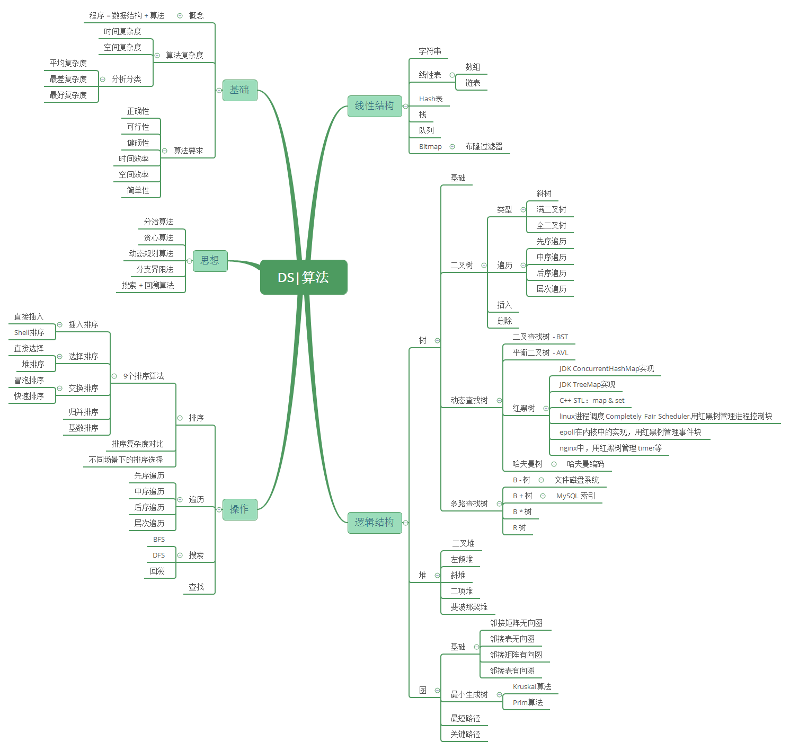
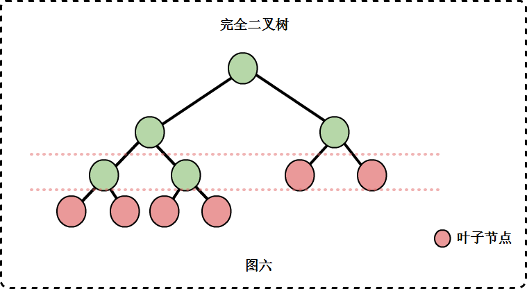

OverView

数据结构
数组
- 优点：存取速度快。
- 缺点：a.事先必须知道数组的长度。b.需要大块连续的内存块。c.插入删除元素的效率低
- Java中主要类似的实现为ArrayList，其他一些容器底层也几乎都会用数组存储数据。
链表
- 优点：插入删除元素快；无空间限制。
- 缺点：查找存取慢。
- 分类：单向链表；双向链表；循环链表
- Java中主要类似的实现为LinkedList，其他一些容器底层也会用到链表。
哈希表
- 详情见HashMap源码剖析。
栈和队列
- 栈：LIFO
- 队列：FIFO
- Java中推荐使用ArrayDeque。
树
基础
二叉树
最多有两棵子树的树。

满二叉树
二叉树中所有非叶子节点的度都是2，且叶子节点都在同一层次上。

完全二叉树
如果一个二叉树与满二叉树前m个节点的结构相同，这样的二叉树被称为完全二叉树。

二叉搜索树（BST）
二叉查找树(Binary Search Tree)是指一棵空树或者具有下列性质的二叉树:
若任意节点的左子树不空，则左子树上所有结点的值均小于它的根结点的值；
任意节点的右子树不空，则右子树上所有结点的值均大于它的根结点的值；
- 任意节点的左、右子树也分别为二叉查找树。
- 没有键值相等的节点。
平衡二叉树（AVL）
平衡二叉树是指一棵空树或者它的左右两个子树的高度差绝对值不超过1，并且左右两个子树都是一棵平衡二叉树。并且它满足二叉查找树的性质。
红黑树（R-B Tree）
B树
B树是一种平衡多路查找树。
B+树
B*树
R树
哈夫曼树
图
基础
- 定义
- 相关概念
- 类型
- 无向图
- 有向图
- 完全图
存储结构
- 邻接矩阵表示法
- 邻接表表示法
BFS和DFS
最小生成树
- 相关概念
- Kruskal算法
- Prim算法
最短路径算法
- Dijkstra算法
- Floyd算法
拓扑排序
AOE网与关键路径
Blog推荐
- 基础：https://www.cnblogs.com/skywang12345/p/3603935.html
- 进阶：https://blog.csdn.net/v_JULY_v/article/list/3
参考：https://www.pdai.tech/md/algorithm/alg-basic-overview.html